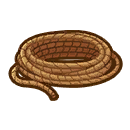

Salón Ailes D'ange


El salón de belleza y spa esta dirigido por Karina y Jeanne. Se abre después del Episodio 3 de la mejora de la ciudad y se expande cuando Jeanne se muda a la ciudad. Karina, la propietaria del salón, dirige la parte boutique del negocio. Los jugadores pueden hablar con Karina para cambiar su peinado o encargar ropa, sombreros y accesorios a medida. Jeanne, aprendiz de Karina, dirige el spa. Hablar con Jeanne permite a los jugadores cambiar su apariencia, como los rasgos faciales y las opciones de tono de piel.
Lista de ropa
Lista de atuendos
Atuendos vaqueros
| Atuendo | Precio | Materiales requeridos | Requisito de desbloqueo |
|---|---|---|---|
| Atuendo de vaquero blanco | 2.000 G |
 2 Tela  3 Tela flexible |
Desde el inicio |
| Atuendo de vaquero azul | 4.000 G |
2 Tela flexible  3 Tela resistente  5 Tinte azul |
Alcanza el nivel 4 en el desarrollo de la ciudad. |
| Trajes cortos de vaquero blanco | 2.000 G |
2 Tela 3 Tela flexible |
Desde el inicio |
| Trajes cortos de vaquero rojo | 4.000 G |
2 Tela flexible 3 Tela resistente  5 Tinte rojo |
Alcanza el nivel 4 en el desarrollo de la ciudad. |
| Atuendo de vaquera blanco | 2.000 G |
1 Tela 2 Tela flexible |
Desde el inicio |
| Atuendo de vaquera naranja | 4.000 G |
1 Tela flexible 2 Tela resistente 5 Tinte rojo  5 Tinte amarillo |
Alcanza el nivel 4 en el desarrollo de la ciudad. |
Overoles
| Atuendo | Precio | Materiales requeridos | Requisito de desbloqueo |
|---|---|---|---|
| Overol verde | 1.000 G |
4 Tela |
Desde el inicio |
| Overol blanco | 3.000 G |
4 Tela 4 Tela flexible  5 Tinte blanco  5 Tinte negro |
Alcanza el nivel 4 en el desarrollo de la ciudad. |
| Overol rojo con capucha | 1.000 G |
4 Tela 
2 Cuerda 5 Tinte rojo |
Desde el inicio |
| Overol amarillo con capucha | 3.000 G |
4 Tela 4 Tela flexible 2 Cuerda  5 Tinte purpura |
Alcanza el nivel 4 en el desarrollo de la ciudad. |
| Overol corto de raya | 1.000 G |
3 Tela |
Desde el inicio |
| Overol corto de cuadros | 3.000 G |
3 Tela 4 Tela flexible 5 Tinte azul 5 Tinte purpura |
Alcanza el nivel 4 en el desarrollo de la ciudad. |
Atuendos japones
| Atuendo | Precio | Materiales requeridos | Requisito de desbloqueo |
|---|---|---|---|
| Abrigo Happi festivo verde | 3.000 G |
3 Tela flexible  5 Tinte verde 5 Tinte rojo |
Desde el inicio |
| Abrigo Happi festivo azul | 6.000 G |
3 Tela flexible 3 Tela resistente 5 Tinte azul 5 Tinte amarillo |
Alcanza el nivel 4 en el desarrollo de la ciudad. |
| Abrigo rojo festivo Hanten | 3.000 G |
3 Tela flexible 5 Tinte rojo 5 Tinte amarillo |
Desde el inicio |
| Abrigo amarillo festivo Hanten | 6.000 G |
1 Tela resistente  3 Tela suave |
Alcanza el nivel 4 en el desarrollo de la ciudad. |
| Hakama rojo | 4.000 G |
3 Tela flexible  2 Tela de lana de oveja 3 Cuerda |
Desde el inicio |
| Hakama verde | 8.000 G |
3 Tela suave 2 Tela de lana de oveja 3 Cuerda 5 Tinte verde |
Alcanza el nivel 5 en el desarrollo de la ciudad. |
| Hakama purpura | 16.000 G |
 3 Tela quimera  2 Tela de lana de oveja suffolk 3 Cuerda 10 Tinte purpura |
Alcanza el nivel 7 en el desarrollo de la ciudad. |
Pantalones con tirantes
| Atuendo | Precio | Materiales requeridos | Requisito de desbloqueo |
|---|---|---|---|
| Pantalones con tirantes negros | 5.000 G |
4 Tela resistente 4 Tela suave 5 Cuerda |
Desde el inicio |
| Pantalones con tirantes azules | 8.000 G |
4 Tela resistente 4 Tela suave  1 Tela de lana de alpaca marrón 5 Cuerda |
Alcanza el nivel 5 en el desarrollo de la ciudad. |
| Pantalones con tirantes marrones | 16.000 G |
4 Tela resistente 4 Tela suave 5 Cuerda 10 Tinte blanco |
Alcanza el nivel 7 en el desarrollo de la ciudad. |
| Pantalones cortos con tirantes negros | 5.000 G |
4 Tela resistente 4 Tela suave 5 Cuerda |
Desde el inicio |
| Pantalones cortos con tirantes verdes | 8.000 G |
4 Tela resistente 4 Tela suave 1 Tela de lana de alpaca marrón 5 Cuerda |
Alcanza el nivel 5 en el desarrollo de la ciudad. |
| Pantalones cortos con tirantes azules | 16.000 G |
4 Tela resistente  1 Tela de lana de alpaca 5 Cuerda 10 Tinte azul |
Alcanza el nivel 7 en el desarrollo de la ciudad. |
Sudadera y Jersey con pantalón
| Atuendo | Precio | Materiales requeridos | Requisito de desbloqueo |
|---|---|---|---|
| Sudadera con capucha gris | 5.000 G |
3 Tela resistente 2 Tela de lana de oveja suffolk 2 Cuerda |
Desde el inicio |
| Sudadera con capucha rojo | 8.000 G |
3 Tela suave  2 Tela de pelo de conejo 2 Cuerda 5 Tinte rojo |
Alcanza el nivel 5 en el desarrollo de la ciudad. |
| Sudadera con capucha azul | 16.000 G |
3 Tela suave 2 Tela de pelo de conejo 2 Cuerda 10 Tinte azul |
Alcanza el nivel 7 en el desarrollo de la ciudad. |
| Jersey y pantalón de rombos verdes | 6.000 G |
3 Tela flexible 1 Tela de pelo de conejo  1 Tela de pelo de conejo gris |
Desde el inicio |
| Jersey y pantalón de rombos negros | 12.000 G |
3 Tela flexible 1 Tela de pelo de conejo 1 Tela de pelo de conejo gris 5 Tinte rojo |
Alcanza el nivel 6 en el desarrollo de la ciudad. |
| Jersey y falda de rombos verdes | 6.000 G |
3 Tela flexible 1 Tela de pelo de conejo 1 Tela de pelo de conejo gris |
Desde el inicio |
| Jersey y falda de rombos rosas | 12.000 G |
3 Tela quimera  3 Tela de pelo de conejo rosa |
Alcanza el nivel 6 en el desarrollo de la ciudad. |
Sueteres
| Atuendo | Precio | Materiales requeridos | Requisito de desbloqueo |
|---|---|---|---|
| Suéter marrón y pantalones | 8.000 G |
1 Tela de lana de alpaca marrón  3 Ovillo de lana de alpaca marrón |
Desde el inicio |
| Suéter verde y pantalones | 16.000 G |
1 Tela de lana de oveja suffolk 3 Ovillo de lana de alpaca marrón 10 Tinte verde |
Alcanza el nivel 7 en el desarrollo de la ciudad. |
| Suéter marrón y minifalda | 8.000 G |
3 Tela de lana de alpaca marrón |
Desde el inicio |
| Suéter azul y minifalda | 16.000 G |
1 Tela de lana de oveja suffolk 1 Tela de lana de alpaca 10 Tinte azul |
Alcanza el nivel 7 en el desarrollo de la ciudad. |
| Suéter rojo y minifalda | 8.000 G |
1 Tela de lana de alpaca marrón 1 Tela de lana de alpaca |
Desde el inicio |
| Suéter marrón y falda | 16.000 G |
2 Tela de lana de alpaca marrón 1 Tela de lana de alpaca |
Alcanza el nivel 7 en el desarrollo de la ciudad. |
Chalecos y Chaqueta
| Atuendo | Precio | Materiales requeridos | Requisito de desbloqueo |
|---|---|---|---|
| Chaleco suéter rojo | 6.000 G |
5 Tela suave 3 Tela de lana de alpaca |
Desde el inicio |
| Chaleco suéter marrón | 9.000 G |
5 Tela suave 3 Tela de lana de alpaca marrón |
Alcanza el nivel 5 en el desarrollo de la ciudad. |
| Chaleco casual de cuadros | 18.000 G |
5 Tela suave 3 Tela de pelo de conejo gris |
Alcanza el nivel 7 en el desarrollo de la ciudad. |
| Chaqueta universitaria azul marino | 8.000 G |
5 Tela resistente 5 Tela suave 2 Tela de lana de oveja |
Desde el inicio |
| Chaqueta universitaria rojo | 10.000 G |
5 Tela resistente 5 Tela suave 2 Tela de pelo de conejo rosa  5 Tinte rosa |
Alcanza el nivel 6 en el desarrollo de la ciudad. |
| Chaqueta universitaria verde | 20.000 G |
5 Tela resistente 5 Tela suave 2 Tela de pelo de conejo 15 Tinte verde |
Alcanza el nivel 8 en el desarrollo de la ciudad. |
| Chaqueta universitaria amarillo | 40.000 G |
5 Tela resistente 5 Tela suave 1 Tela de lana de alpaca 20 Tinte amarillo |
Alcanza el nivel 9 en el desarrollo de la ciudad. |
| Chaqueta de chef azul | 8.000 G |
5 Tela 5 Tela resistente |
Desde el inicio |
| Chaqueta de chef amarillo | 12.000 G |
5 Tela 5 Tela suave 2 Tela de pelo de conejo 5 Tinte amarillo |
Alcanza el nivel 6 en el desarrollo de la ciudad. |
| Chaqueta de chef rosa | 24.000 G |
5 Tela 5 Tela quimera 2 Tela de pelo de conejo rosa 20 Tinte rosa |
Alcanza el nivel 9 en el desarrollo de la ciudad. |
| Chaleco y pantalones negros | 10.000 G |
10 Tela suave 3 Tela de pelo de conejo gris 2 Tela de lana de oveja suffolk |
Desde el inicio |
| Chaleco y pantalones grices | 20.000 G |
10 Tela quimera 4 Tela de pelo de conejo gris 4 Tela de lana de oveja suffolk 15 Tinte azul |
Alcanza el nivel 8 en el desarrollo de la ciudad. |
| Chaleco y falda negros | 10.000 G |
10 Tela suave 3 Tela de pelo de conejo gris 2 Tela de lana de oveja suffolk |
Desde el inicio |
| Chaleco y falda blancos | 20.000 G |
10 Tela quimera 4 Tela de pelo de conejo gris 4 Tela de lana de alpaca 15 Tinte azul |
Alcanza el nivel 8 en el desarrollo de la ciudad. |
Abrigos de nieve
| Atuendo | Precio | Materiales requeridos | Requisito de desbloqueo |
|---|---|---|---|
| Abrigo de nieve negro | 10.000 G |
10 Tela de lana de oveja suffolk 30 Tinte negro |
Desde el inicio |
| Abrigo de nieve blanco | 20.000 G |
5 Tela quimera 3 Tela de pelo de conejo 3 Tela de lana de oveja 3 Tela de lana de alpaca |
Alcanza el nivel 8 en el desarrollo de la ciudad. |
| Abrigo de nieve gris | 60.000 G |
5 Tela quimera 10 Tela de pelo de conejo gris |
Alcanza el nivel 10 en el desarrollo de la ciudad. |
| Abrigo de nieve blanco con capucha | 10.000 G |
3 Tela de pelo de conejo 3 Tela de lana de oveja 3 Tela de lana de alpaca |
Desde el inicio |
| Abrigo de nieve negro con capucha | 20.000 G |
5 Tela quimera 10 Tela de lana de alpaca marrón 30 Tinte negro |
Alcanza el nivel 8 en el desarrollo de la ciudad. |
| Abrigo de nieve gris con capucha | 60.000 G |
5 Tela quimera 10 Tela de pelo de conejo gris |
Alcanza el nivel 10 en el desarrollo de la ciudad. |
Trajes y Esmoquin
| Atuendo | Precio | Materiales requeridos | Requisito de desbloqueo |
|---|---|---|---|
| Traje negro | 10.000 G |
10 Tela suave 5 Tela de pelo de conejo gris |
Desde el inicio |
| Traje marrón | 20.000 G |
10 Tela quimera 5 Tela de lana de alpaca marrón |
Alcanza el nivel 8 en el desarrollo de la ciudad. |
| Esmoquin de medianoche | 1.000.000 G |
10 Tela quimera 10 Tela de pelo de conejo gris 10 Tela de lana de alpaca marrón 50 Tinte negro |
Despues del matrimonio |
| Esmoquin a la luz de la luna | 1.000.000 G |
10 Tela quimera 10 Tela de pelo de conejo rosa 10 Tela de lana de oveja suffolk 50 Tinte blanco |
Despues del matrimonio |
Otros Atuendos
| Atuendo | Precio | Materiales requeridos | Requisito de desbloqueo |
|---|---|---|---|
| Chaqueta de granja | 500 G |
2 Tela |
Desde el inicio |
| Falda de granja | 500 G |
2 Tela |
Desde el inicio |
| Estilo punk negro | 5.000 G |
3 Tela resistente 3 Tela flexible |
Desde el inicio |
| Estilo punk rojo | 10.000 G |
3 Tela resistente 3 Tela suave 5 Tinte rojo |
Alcanza el nivel 5 en el desarrollo de la ciudad. |
| Estilo punk corto negro | 5.000 G |
3 Tela resistente 3 Tela flexible |
Desde el inicio |
| Estilo punk corto rojo | 10.000 G |
3 Tela resistente 3 Tela suave 5 Tinte rojo |
Alcanza el nivel 5 en el desarrollo de la ciudad. |
| Chándal negro | 5.000 G |
4 Tela resistente |
Desde el inicio |
| Chándal rojo | 10.000 G |
4 Tela suave 5 Tinte rojo |
Alcanza el nivel 5 en el desarrollo de la ciudad. |
| Falda campera roja | 10.000 G |
5 Tela 5 Tela flexible 5 Tela resistente 5 Tela suave |
Desde el inicio |
| Falda campera verde | 20.000 G |
10 Tela quimera 5 Tela de lana de oveja 5 Tela de lana de oveja suffolk 15 Tinte verde |
Alcanza el nivel 8 en el desarrollo de la ciudad. |
| Vestidos florales inocentes | 1.000.000 G |
10 Tela quimera  10 Diamante 30 Tinte blanco 30 Tinte azul |
Despues del matrimonio |
| Vestido Belle Karina | 1.000.000 G |
10 Tela quimera  10 Colonia encantadora 30 Tinte blanco 30 Tinte azul |
Despues del matrimonio |
| Atuendo de la cosecha | 50.000 G |
10 Tela quimera 5 Tela de lana de alpaca 15 Tinte rojo |
Despues de ver el evento 3 de los eventos extras de el espiritu de la naturaleza. |
| Atuendo de la cosecha abundante | 50.000 G |
10 Tela quimera 5 Tela de pelo de conejo 15 Tinte rojo |
Despues de ver el evento 3 de los eventos extras de el espiritu de la naturaleza. |
| Duende de la Tierra Informal | 25.000 G |
5 Tela quimera 10 Tinte blanco 10 Tinte azul |
Despues de ver el evento 3 de los eventos extras de el espiritu de la naturaleza. |
Lista de sombreros
Sombrero de paja
| Accesorios | Precio | Materiales requeridos | Requisito de desbloqueo |
|---|---|---|---|
| Sombrero de paja azul | 1.000 G |
 50 Hierba |
Desde el inicio |
| Sombrero de paja amarillo | 2.000 G |
 50 Hierba flexible |
Alcanza el nivel 4 en el desarrollo de la ciudad. |
| Sombrero de paja rojo | 4.000 G |
 50 Hierba quimera |
Alcanza el nivel 4 en el desarrollo de la ciudad. |
Gorra de vendedor de periodico
| Accesorios | Precio | Materiales requeridos | Requisito de desbloqueo |
|---|---|---|---|
| Gorra de vendedor de periodico Marrón | 2.000 G |
2 Tela 2 Tela flexible |
Desde el inicio |
| Gorra de vendedor de periodico azul | 4.000 G |
4 Tela resistente |
Alcanza el nivel 4 en el desarrollo de la ciudad. |
| Gorra de vendedor de periodico Blanca | 4.000 G |
2 Tela 2 Tela de pelo de conejo |
Alcanza el nivel 5 en el desarrollo de la ciudad. |
| Gorra de vendedor de periodico Negra | 6.000 G |
2 Tela resistente 2 Tela suave 5 Tinte negro |
Alcanza el nivel 6 en el desarrollo de la ciudad. |
| Gorra de vendedor de periódicos de gato | 12.000 G |
4 Tela quimera 15 Tinte negro |
Alcanza el nivel 8 en el desarrollo de la ciudad. |
Sombrero de paja
| Accesorios | Precio | Materiales requeridos | Requisito de desbloqueo |
|---|---|---|---|
| Gorra de béisbol blanca | 2.000 G |
2 Tela 2 Tela resistente |
Desde el inicio. |
| Gorra de béisbol negra | 4.000 G |
2 Tela resistente 2 Tela suave 5 Tinte negro |
Alcanza el nivel 5 en el desarrollo de la ciudad. |
| Gorra de béisbol roja | 6.000 G |
4 Tela quimera |
Alcanza el nivel 4 en el desarrollo de la ciudad. |
Sombrero de diez galones
| Accesorios | Precio | Materiales requeridos | Requisito de desbloqueo |
|---|---|---|---|
| Sombrero marrón de diez galones | 2.000 G |
1 Tela 2 Tela flexible 3 Cuerda |
Desde el inicio. |
| Sombrero negro de diez galones | 4.000 G |
1 Tela flexible 2 Tela resistente 3 Cuerda 5 Tinte negro |
Alcanza el nivel 5 en el desarrollo de la ciudad. |
| Sombrero rojo de diez galones | 8.000 G |
1 Tela resistente 2 Tela suave 3 Cuerda 10 Tinte rojo |
Alcanza el nivel 7 en el desarrollo de la ciudad. |
Gorro de punto
| Accesorios | Precio | Materiales requeridos | Requisito de desbloqueo |
|---|---|---|---|
| Gorro de punto azul | 3.000 G |
 6 Ovillo de lana de oveja |
Desde el inicio. |
| Gorro de punto rosa | 6.000 G |
 6 Ovillo de pelo de conejo rosa |
Alcanza el nivel 6 en el desarrollo de la ciudad. |
| Gorro de punto amarillo | 12.000 G |
 6 Ovillo de lana de alpaca |
Alcanza el nivel 8 en el desarrollo de la ciudad. |
Gorra plana
| Accesorios | Precio | Materiales requeridos | Requisito de desbloqueo |
|---|---|---|---|
| Gorra plana marrón | 4.000 G |
2 Tela 2 Tela flexible |
Desde el inicio. |
| Gorra plana gris | 6.000 G |
2 Tela de pelo de conejo gris 2 Tela de lana de oveja suffolk |
Alcanza el nivel 6 en el desarrollo de la ciudad. |
| Gorra plana verde | 12.000 G |
2 Tela resistente 2 Tela suave |
Alcanza el nivel 8 en el desarrollo de la ciudad. |
Gorra de chef
| Accesorios | Precio | Materiales requeridos | Requisito de desbloqueo |
|---|---|---|---|
| Gorra de chef azul | 4.000 G |
2 Tela 2 Tela resistente |
Desde el inicio. |
| Gorra de chef amarillo | 6.000 G |
2 Tela 2 Tela suave 2 Tela de pelo de conejo 5 Tinte amarillo |
Alcanza el nivel 6 en el desarrollo de la ciudad. |
| Gorra de chef rosa | 12.000 G |
2 Tela 2 Tela quimera 2 Tela de pelo de conejo rosa 15 Tinte rosa |
Alcanza el nivel 8 en el desarrollo de la ciudad. |
Sombrero cosaco
| Accesorios | Precio | Materiales requeridos | Requisito de desbloqueo |
|---|---|---|---|
| Sombrero cosaco blanco | 8.000 G |
 1 Pelo de conejo +  1 Lana de oveja +  1 Lana de alpaca + |
Desde el inicio. |
| Sombrero cosaco negro | 10.000 G |
 1 Lana de alpaca marron + 15 Tinte negro |
Alcanza el nivel 8 en el desarrollo de la ciudad. |
| Sombrero cosaco gris | 20.000 G |
 3 Pelo de conejo gris + |
Alcanza el nivel 8 en el desarrollo de la ciudad. |
Corona de flores
| Accesorios | Precio | Materiales requeridos | Requisito de desbloqueo |
|---|---|---|---|
| Corona de flores preciosa | 5.000 G |
 4 Hibisco  4 Lirio  4 Prímula |
Desde el inicio. |
| Corona de flores alegre | 8.000 G |
 4 Pensamiento  4 Clemátide  4 Begonia |
Alcanza el nivel 8 en el desarrollo de la ciudad. |
| Corona de flores elegante | 16.000 G |
 4 Nemophila  4 Margarita  4 Campánula |
Alcanza el nivel 8 en el desarrollo de la ciudad. |
Sombreros Especiales
| Accesorios | Precio | Materiales requeridos | Requisito de desbloqueo |
|---|---|---|---|
| Gorra de granja | 1.000 G |
5 Tela |
Desde el inicio |
| Sombrero de seda | 10.000 G |
5 Tela suave 5 Tela de pelo de conejo gris |
Desde el inicio |
| Tiara | 1.000.000 G |
 3 Lingote de oricalco 10 Diamante |
Despues del matrimonio |
Lista de accesorios
Gafas ovaladas
| Accesorios | Precio | Materiales requeridos | Requisito de desbloqueo |
|---|---|---|---|
| Gafas negras con montura ovalada | 1.000 G |
 5 Cemento  5 Vidrio |
Desde el inicio |
| Gafas marrones con montura ovalada | 2.000 G |
5 Cemento 5 Vidrio 5 Tinte rojo 5 Tinte verde |
Desde el inicio |
| Gafas rojas con montura ovalada | 2.000 G |
5 Cemento 5 Vidrio 5 Tinte rojo |
Desde el inicio |
| Gafas azules con montura ovalada | 2.000 G |
5 Cemento 5 Vidrio 5 Tinte azul |
Desde el inicio |
| Gafas verdes con montura ovalada | 2.000 G |
5 Cemento 5 Vidrio 5 Tinte verde |
Desde el inicio |
| Gafas amarillas con montura ovalada | 2.000 G |
5 Cemento 5 Vidrio 5 Tinte amarillo |
Desde el inicio |
| Gafas rosas con montura ovalada | 2.000 G |
5 Cemento 5 Vidrio 5 Tinte rosa |
Desde el inicio |
Gafas cuadradas
| Accesorios | Precio | Materiales requeridos | Requisito de desbloqueo |
|---|---|---|---|
| Gafas negras con montura cuadrada | 1.000 G |
5 Cemento 5 Vidrio |
Desde el inicio |
| Gafas marrones con montura cuadrada | 2.000 G |
5 Cemento 5 Vidrio 5 Tinte rojo 5 Tinte verde |
Desde el inicio |
| Gafas rojas con montura cuadrada | 2.000 G |
5 Cemento 5 Vidrio 5 Tinte rojo |
Desde el inicio |
| Gafas azules con montura cuadrada | 2.000 G |
5 Cemento 5 Vidrio 5 Tinte azul |
Desde el inicio |
| Gafas verdes con montura cuadrada | 2.000 G |
5 Cemento 5 Vidrio 5 Tinte verde |
Desde el inicio |
| Gafas amarillas con montura cuadrada | 2.000 G |
5 Cemento 5 Vidrio 5 Tinte amarillo |
Desde el inicio |
| Gafas rosas con montura cuadrada | 2.000 G |
5 Cemento 5 Vidrio 5 Tinte rosa |
Desde el inicio |
Gafas gruesas
| Accesorios | Precio | Materiales requeridos | Requisito de desbloqueo |
|---|---|---|---|
| Gafas gruesas con montura negra | 1.000 G |
5 Cemento 5 Vidrio |
Desde el inicio |
| Gafas gruesas con montura marrón | 2.000 G |
5 Cemento 5 Vidrio 5 Tinte rojo 5 Tinte verde |
Desde el inicio |
| Gafas gruesas con montura roja | 2.000 G |
5 Cemento 5 Vidrio 5 Tinte rojo |
Desde el inicio |
| Gafas gruesas con montura azul | 2.000 G |
5 Cemento 5 Vidrio 5 Tinte azul |
Desde el inicio |
| Gafas gruesas con montura verde | 2.000 G |
5 Cemento 5 Vidrio 5 Tinte verde |
Desde el inicio |
| Gafas gruesas con montura amarilla | 2.000 G |
5 Cemento 5 Vidrio 5 Tinte amarillo |
Desde el inicio |
| Gafas gruesas con montura rosa | 2.000 G |
5 Cemento 5 Vidrio 5 Tinte rosa |
Desde el inicio |
Gafas de media montura
| Accesorios | Precio | Materiales requeridos | Requisito de desbloqueo |
|---|---|---|---|
| Gafas de media montura negra | 1.000 G |
5 Cemento 5 Vidrio |
Desde el inicio |
| Gafas de media montura marrón | 2.000 G |
5 Cemento 5 Vidrio 5 Tinte rojo 5 Tinte verde |
Desde el inicio |
| Gafas de media montura roja | 2.000 G |
5 Cemento 5 Vidrio 5 Tinte rojo |
Desde el inicio |
| Gafas de media montura azul | 2.000 G |
5 Cemento 5 Vidrio 5 Tinte azul |
Desde el inicio |
| Gafas de media montura verde | 2.000 G |
5 Cemento 5 Vidrio 5 Tinte verde |
Desde el inicio |
| Gafas de media montura amarilla | 2.000 G |
5 Cemento 5 Vidrio 5 Tinte amarillo |
Desde el inicio |
| Gafas de media montura rosa | 2.000 G |
5 Cemento 5 Vidrio 5 Tinte rosa |
Desde el inicio |
Gafas decoradas
| Accesorios | Precio | Materiales requeridos | Requisito de desbloqueo |
|---|---|---|---|
| Gafas con chapas de botella | 3.000 G |
 5 Lingote de plata  5 Botella vacia |
Desde el inicio |
| Gafas de motociclista negras | 5.000 G |
5 Lingote de plata 5 Vidrio |
Desde el inicio |
| Gafas de motociclista marrones | 5.000 G |
5 Lingote de plata 5 Vidrio 5 Tinte rojo 5 Tinte verde |
Desde el inicio |
| Gafas elegantes | 5.000 G |
5 Lingote de plata 5 Vidrio |
Desde el inicio |
| Gafas sin montura | 6.000 G |
2 Lingote de plata 5 Vidrio |
Desde el inicio |
| Gafas Redondas Rosas | 8.000 G |
 5 Lingote de oro 5 Vidrio |
Desde el inicio |
| Gafas Redondas Negras | 10.000 G |
3 Lingote de plata 3 Lingote de oro 5 Vidrio 10 Tinte negro |
Desde el inicio |
| Mini gafas redondas | 10.000 G |
1 Lingote de plata 1 Lingote de oro 3 Vidrio 10 Tinte negro |
Desde el inicio |
| Gafas de aviador | 500.000 G |
5 Lingote de oro 1 Lingote de oricalco 5 Vidrio 5 Tinte negro |
Alcanza el nivel 8 en el desarrollo de la ciudad. |